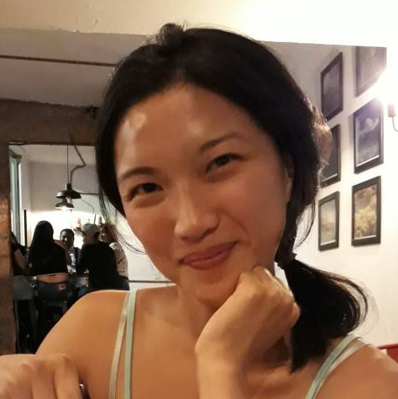

Kimberlee Chang
PhD Candidate, Department of Political Science
University of Colorado- Boulder
Welcome! I am a PhD Candidate in the Department of Political Science at the University of Colorado- Boulder. I am also an affiliate of the Center for the Governance of Natural Resources at the Institute of Behavioral Science .
My research sits at the intersection of including marginal groups in local politics, polycentric natural resource governance, and empowerment of vulnerable actors-- such as small holder farmers, landless laborers, resource users in customary land regime, women, marginalized social groups-- in land-use politics. For my dissertation, I am investigating the role of collective identities in perpetuating and also changing inequality promoting social norms. I explore how identity and norms affect equality promoting institutions, such as quotas in local resource governance commitees, and how we can design complimentory interventions to achieve meaningful representation. I thrive to use both quantitative (Causal inference designs, survey data analysis, text analysis) and qualitative approaches to data collection and analysis.
More about my research Email me: kimberlee.chang@colorado.edu
A large part of my research is funded by the US National Science Foundation through the Graduate Research Fellowship Program.
AOutside of doing research, you can find me earning new languages, dancing, making and eating food, spending time in the ocean. I am also an avid student of sustainable agricultural practices, and native crops and food traditions.